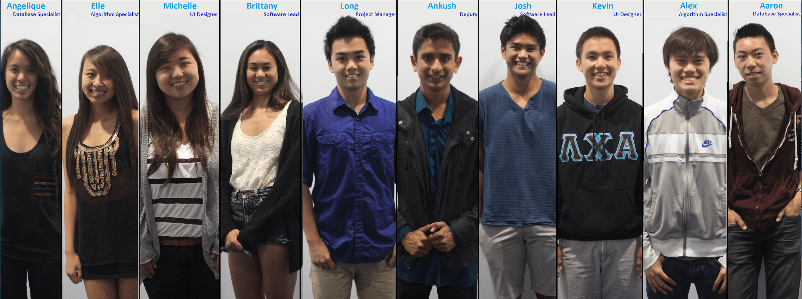

Long Tran
Computer Science | Business | UCSD | Future Entrepreneur | Realist


What I bring to the table. From software development to coffee making. All in 12 graphs.

My name is 1, a 19-year-old working toward a Bachelor of Science. I live in La Jolla and am a Chancellor’s Scholar at University of California, San Diego, where I study Computer Science and Business.
I like computers, LEGO’s, and Starbucks. I am fluent in Vietnamese, know a tiny bit of Japanese and Spanish, and also speak Java, Python, C#, C/C++, HTML/CSS, and PHP. My many hobbies include making websites & iOS applications, solving number theory problems on projecteuler.net, reading tech news & investment/finance books, watching Shark Tank & The Apprentice, coding, blogging, traveling(!), looking sharp, and making coffee.
By 2016, I will have obtained my Bachelor's, a solid technical background, an awesome resume (see below!), and a vast, professional network. I am utilizing (almost) every minute of my time working toward this future through internships, research, and course works.
A Computer Science and Business student University of California, San Diego.
My name is Long Tran, a 19-year-old working toward a Bachelor of Science. I live in La Jolla and am a Chancellor’s Scholar at University of California, San Diego, where I study Computer Science and Business.
I like computers, LEGO’s, and Starbucks. I am fluent in Vietnamese, know a tiny bit of Japanese and Spanish, and also speak Java, Python, C#, C/C++, HTML/CSS, and PHP. My many hobbies include making websites & iOS applications, solving number theory problems on projecteuler.net, reading tech news & investment/finance books, watching Shark Tank & The Apprentice, coding, blogging, traveling(!), looking sharp, and making coffee.
By 2016, I will have obtained my Bachelor's, a solid technical background, an awesome resume (see below!), and a vast, professional network. I am utilizing (almost) every minute of my time working toward this future through internships, research, and course works.
My accomplishments at companies and organizations I've had a chance to work with.
My name is 2, a 19-year-old working toward a Bachelor of Science. I live in La Jolla and am a Chancellor’s Scholar at University of California, San Diego, where I study Computer Science and Business.
I like computers, LEGO’s, and Starbucks. I am fluent in Vietnamese, know a tiny bit of Japanese and Spanish, and also speak Java, Python, C#, C/C++, HTML/CSS, and PHP. My many hobbies include making websites & iOS applications, solving number theory problems on projecteuler.net, reading tech news & investment/finance books, watching Shark Tank & The Apprentice, coding, blogging, traveling(!), looking sharp, and making coffee.
By 2016, I will have obtained my Bachelor's, a solid technical background, an awesome resume (see below!), and a vast, professional network. I am utilizing (almost) every minute of my time working toward this future through internships, research, and course works.
A data analytics project aimed to study the popularity of several thousands GitHub's repositories.

GitHub Data Challenge is a data analytics project aimed to make sense of millions of data points gathered from all the repositories hosted on github.com. GitHub is a known to be the home of thousands of sophisticated and widely-known repositories. That leaves my partner and I wonder what factors have attributed to their successes.
Hacker News, a very popular social news website catered to programmers and entrepreneurs, often contains posts that are linked to GitHub repositories, most of which are very popular.
How does linking a GitHub repository on HackerNews change its popularity? Is there such thing as ‘the HackerNews popularity bump’ ? Those are the questions we want to answer after this project. We want to determine if being mentioned on Hacker News significantly contributes to a repository’s popularity and if so, by how much. Popularity is defined as the raw number of ‘stars’ a particular repository has. To answer this ‘simple’ binary question, we studied the growth rate of each of the 1.5 millions repositories a week before and after the date it was mentioned on Hacker News, if it was mentioned at all. We repeated this process for all repositories to find the average.
Those are the questions we want to answer after this project. We want to determine if being mentioned on Hacker News significantly contributes to a repository’s popularity and if so, by how much. Popularity is defined as the raw number of ‘stars’ a particular repository has. To answer this ‘simple’ binary question, we studied the growth rate of each of the 1.5 millions repositories a week before and after the date it was mentioned on Hacker News, if it was mentioned at all. We repeated this process for all repositories to find the average.
HackerNews increases the rate of growth in number of stars for the repo by 38.15%. The percentage increase varies depending on your repository’s number of stars and your HackerNews post’s upvotes.
The graph contains data that only matches with the constraints on the sliders. The red line shows the daily percentage increase in the number of stars for the week before and after the HackerNews mention. The blue line shows the daily percentage increase in the number of stars for all repositories in the week surrounding the expected date of mention.
The sliders control the two searching constraints: number of upvotes of a HackerNews post and number of stars of a linked GitHub repository. They represent different tiers of the data. This is because there is a large disparity in the effects on a 50,000-star repository as opposed to a 50-star one. The HackerNews upvotes slider determines the upvotes needed to create the “popularity bump”. Note that the repositories that have not been mentioned on HackerNews are not constrained by this slider.
The red line represents the percentage growth in stars each day. This is calculated by the generic growth formula. For instance, if a repository has 100 stars today and 120 stars tomorrow, the growth is (120 - 100)/100 = 20%. The data was processed and visualized this way instead of using the raw number of stars. This is because we found the data to be too far skewed when some repositories have a huge number of stars (cough cough Twitter’s Bootstrap).
The blue line represents the expected growth of a GitHub repository without being mentioned on HackerNews. This is extremely useful in determining whether HackerNews has any effect at all. The data included here is not the 15 day outlook, but rather an expected growth without any effect from HackerNews.
To gather information about the popularity of repositories over time, we attempted to recreate a timeline of all GitHub events useful for this study (i.e when a user starring a repository). Unfortunately, these data was not readily available to download; they had to be obtained from alternative data sources. There were 3 options available:
-GitHub’s native API: a typical API hosted by GitHub
-Google BigQuery: a RESTful API enabling analysis of massive datasets
-GitHub Archive: an open-source project by Google's Ilya Grigorik.
All of these data sources provided enough information needed for our study. However, we ran into a few hiccups along the way.
We first tried gathering data from GitHub’s native API by using a Python script and a REST library. Getting the correct queries and responses from the GitHub API requests was fairly simple. The only fallback we could see with this approach was the 10,000 API calls per hour, until we saw discrepancies in the data we got back: we did not see the entire events history for some extremely popular repositories. We later found out that this was due to ‘pagination limit’. This meant if the history of a repository spanned across 10 pages, we would only be able to see up to the 10th page. We did not know how to work around this problem, so we turned to the next data source option, Google BigQuery.
 Google BigQuery really blew us away with its computing power. It could crunch through gigabytes of data in a matter of seconds. The only thing it needed was a SQL-like query. The data could be downloaded in JSON or CSV format once the queries completed. This source proved to be ideal until we found out that the computing power we needed would cost more than ‘Free’. Moving on.
Google BigQuery really blew us away with its computing power. It could crunch through gigabytes of data in a matter of seconds. The only thing it needed was a SQL-like query. The data could be downloaded in JSON or CSV format once the queries completed. This source proved to be ideal until we found out that the computing power we needed would cost more than ‘Free’. Moving on.
The last data source option was GitHub Archive. After finding a Ruby script example, we tweaked the script to download all the data files to process later on. However, the files were in GZIP format, a compression form used to store large files on the web. We had to do more tweaking to do the Ruby script to unzip and read the GZIP files, since Python could not finish this particular task. All the events history data could finally be obtained.
Once all the data was collected and stored in 360 GB worth of JSON, we thought reading from each file to process do the calculation was just a few steps away. Little did we know reading through gigabytes of data would take as long as 5 hours per repository. Our research led to the use of mySQL database, which seemed to provide a more promising lookup time. A Python script read from all the JSON files, collected relevant information, and stored them into a local mySQL database. This one-time process took as long as 7 and a half hours on a MacBook Pro.
Storing relevant data to a mySQL database improved lookup speed significantly. We could query for data much faster using SQL queries, as opposed to reading directly from raw JSON files every time. Although with very efficient speed per repository, there were well over 17 millions events on GitHub that we needed to account for. We agreed that repositories without a certain amount of stars were not worth studying. The challenge was to find the appropriate threshold, which would not take out too many ‘good’ repositories or too few ‘bad’ repositories. The threshold was then decided to be 5 stars. Using a complicated SQL query with a little help of a Stack Overflow user, a table with all the names of the repositories that needed to be checked for Hacker News mention was created.
 The next step was simple: iterating over the newly created table and check which repositories were mentioned on Hacker News. To achieve this, we used Hacker News’ Algolia API, which powered their search engine. The API returned standard JSON responses: if the repository was mentioned on Hacker News, we would know about all the posts it appeared in; if not, then the response would be empty. There were a few duplicates for some repositories (i.e more than one Hacker News post mentioned such repositories). We decided to leave out the ‘unimportant’ posts by selecting only the post with the most upvotes. This was done by tweaking the query used for limiting data coming from GitHub.
The next step was simple: iterating over the newly created table and check which repositories were mentioned on Hacker News. To achieve this, we used Hacker News’ Algolia API, which powered their search engine. The API returned standard JSON responses: if the repository was mentioned on Hacker News, we would know about all the posts it appeared in; if not, then the response would be empty. There were a few duplicates for some repositories (i.e more than one Hacker News post mentioned such repositories). We decided to leave out the ‘unimportant’ posts by selecting only the post with the most upvotes. This was done by tweaking the query used for limiting data coming from GitHub.
At this point, we had enough data to start cross referencing and create our final dataset: a table of all repositories that were mentioned on Hacker News at least once, along with their popularity data for 7 days before and after their date of mention. We would use this table for data visualization, calculating averaged values to make a general conclusion, and providing general, quick statistics about the dataset as a whole.

We plan to visualize these data using a line chart supported by Google Charts API. The line chart will have 15 points on the x-axis, representing the 7 days before, the day of Hacker News mention date, and the 7 days after. The y-axis will measure the popularity unit, be they the raw number of stars or the daily growth rate. The data obtained will be then transferred to a Google Spreadsheet, from which an HTML displays data queried via JavaScript and Google Queries API. Getting the graphs to display correctly was quite a challenge since we had very limited experience with a front-end language like JavaScript. Nevertheless, we think it is an awesome language to learn in the near future.
downloadAllData.rb - downloads all of the data into JSON files
JSONtoMySQL.py - transfers relevant JSON data to a MySQL - database
searchDBForCurrentStars.py - gets most recent entry for each repository
getHNData.py - get the data from Algolia API to DB (takes 55 hours)
hnTabletoHNTableMax.py - gets the most relevant HN event for each repo
getRelevantGHevents.py - gets the most relevant GH events based on HN mentions
getExpectedDateOfMention.py - gets the hn_expected_date_of_mention
getRelevantGHeventAvgCase.py - gets GH events 1 week of hn_expected_date_of_mention
analyzeData.py - analyzes the data and saves results into DB
analyzeDateAvgCase.py - analyzes the average cases data
get_chart_table.py - prepares data that will be pasted to Google Spreadsheet
graph.py - prepares HTML and JavaScript for visualization
Full Project Link
chart_table_avg
+------------------+--------------+------+-----+---------+-------+
| Field | Type | Null | Key | Default | Extra |
+------------------+--------------+------+-----+---------+-------+
| day | int(6) | YES | | NULL | |
| slider_stars | int(6) | YES | | NULL | |
| slider_hn_points | int(6) | YES | | NULL | |
| daily_avg_stars | int(8) | YES | | NULL | |
| daily_growth | double(10,5) | YES | | NULL | |
| change_in_growth | double(10,5) | YES | | NULL | |
| num_data_points | int(6) | YES | | NULL | |
+------------------+--------------+------+-----+---------+-------+
chart_table
+-------------------+--------------+------+-----+---------+-------+
| Field | Type | Null | Key | Default | Extra |
+-------------------+--------------+------+-----+---------+-------+
| day | int(6) | YES | | NULL | |
| slider_stars | int(6) | YES | | NULL | |
| slider_hn_points | int(6) | YES | | NULL | |
| daily_total_stars | int(8) | YES | | NULL | |
| daily_growth | double(10,5) | YES | | NULL | |
| change_in_growth | double(10,5) | YES | | NULL | |
+-------------------+--------------+------+-----+---------+-------+
days_after
+-----------------+--------+------+-----+---------+-------+
| Field | Type | Null | Key | Default | Extra |
+-----------------+--------+------+-----+---------+-------+
| stars | int(6) | YES | | NULL | |
| hn_points | int(6) | YES | | NULL | |
| avg_days_after | int(6) | YES | | NULL | |
| mode_days_after | int(6) | YES | | NULL | |
| num_data_points | int(6) | YES | | NULL | |
+-----------------+--------+------+-----+---------+-------+
event_table_two
+--------------+--------------+------+-----+---------+-------+
| Field | Type | Null | Key | Default | Extra |
+--------------+--------------+------+-----+---------+-------+
| repo_name | varchar(255) | YES | | NULL | |
| stars | int(6) | YES | | NULL | |
| event_time | date | YES | | NULL | |
| repo_created | date | YES | | NULL | |
+--------------+--------------+------+-----+---------+-------+
event_table_condensed
+------------+--------------+------+-----+---------+-------+
| Field | Type | Null | Key | Default | Extra |
+------------+--------------+------+-----+---------+-------+
| repo_name | varchar(255) | YES | | NULL | |
| stars | int(6) | YES | | NULL | |
| event_time | date | YES | | NULL | |
+------------+--------------+------+-----+---------+-------+
event_table_general_condensed
+--------------+--------------+------+-----+---------+-------+
| Field | Type | Null | Key | Default | Extra |
+--------------+--------------+------+-----+---------+-------+
| repo_name | varchar(255) | YES | | NULL | |
| stars | int(6) | YES | | NULL | |
| event_time | date | YES | | NULL | |
| repo_created | date | YES | | NULL | |
+--------------+--------------+------+-----+---------+-------+
hn_event_max
+------------+--------------+------+-----+---------+-------+
| Field | Type | Null | Key | Default | Extra |
+------------+--------------+------+-----+---------+-------+
| repo_name | varchar(255) | YES | | NULL | |
| stars | int(6) | YES | | NULL | |
| hn_points | int(6) | YES | | NULL | |
| event_time | date | YES | | NULL | |
+------------+--------------+------+-----+---------+-------+
hn_event_table_two
+------------+--------------+------+-----+---------+-------+
| Field | Type | Null | Key | Default | Extra |
+------------+--------------+------+-----+---------+-------+
| repo_name | varchar(255) | YES | | NULL | |
| stars | int(6) | YES | | NULL | |
| hn_points | int(6) | YES | | NULL | |
| event_time | date | YES | | NULL | |
+------------+--------------+------+-----+---------+-------+
latest_repo_events
+------------+--------------+------+-----+---------+-------+
| Field | Type | Null | Key | Default | Extra |
+------------+--------------+------+-----+---------+-------+
| repo_name | varchar(255) | YES | | NULL | |
| stars | int(6) | YES | | NULL | |
| hn_points | int(6) | YES | | NULL | |
| event_time | date | YES | | NULL | |
+------------+--------------+------+-----+---------+-------+
max_stars
+------------+--------------+------+-----+---------+-------+
| Field | Type | Null | Key | Default | Extra |
+------------+--------------+------+-----+---------+-------+
| repo_name | varchar(255) | YES | | NULL | |
| stars | int(6) | YES | | NULL | |
| event_time | date | YES | | NULL | |
+------------+--------------+------+-----+---------+-------+
An attempt at learning Python, web scraping, and interpreting financial statements all at once.

I recently picked up my summer reading book, "Warren Buffet and the Interpretation of Financial Statements", by Mary Buffett and David Clark, which basically detailed how Warren Buffett relied on financial statements to decide where to put his money. I am fairly fond of looking over columns of numbers on financial statements, but not so much computing them. I would be more than happy to let a Python script do the heavy lifting for me. Through this project, I hope to get better at web scraping and learn a thing or two about reading financial statements.
After searching for "MSN Money API", I was prompted to the quotes report page of Advanced Photonix Inc... There was no API readily available, which inspired the web-scraping aspect of this project. There were quite a few companies to look at, but I started with Apple Inc. ( fan here!). Mary and David mentioned in their book that Warren looked at 3 documents when it comes to picking stocks: the income statements, the balance sheet, and the cash flow. MSN Money had all 3 of these nicely laid out. I would first tackle the income statements. Different companies would have different numbers of reported years, so it was vital that I could capture all the available data.

Thank to the powerful web-interacting library Splinter, I just needed to find the appropriate CSS tag by inspecting each elements. With Chrome's inspection tool, I saw that all the information I needed only used 3 type of CSS tags, so I used Splinter to query all the elements and categorized them into 3 according lists. After some simple string processing in the Python script, I ended up with an organized string that contained all the information I needed to evaluate a company.
| Total revenue | Income from selling goods before any deduction |
| Cost of revenue | Cost of goods sold |
| Gross profit | Revenue minus cost of revenue |
| Profit margin | Gross profit to total revenue ratio |
| SG&A | Selling, general, & admin: Salaries, ads, operating expenses, etc |
| R&D | Research & development: fund used to innovate |
| Operating expenses | Cost of running a business |
| Operating income | Income after depreciation and operating expenses, before interest and tax |
| Net interest income | Interest on assets minus interest on liabilities |
| Other | Misc. |
| Pretax income | Income after depreciation, operating expenses, interest, before tax |
| Net income | Income after all deductions (bring-home money) |
| Dividend per share | How much a shareholder gets paid for each share owned |
Since I am planning to take a step further by mining all these information for filtering later, I will limit to only a few crucial parts on the Income Statement. There will be a need for an efficient algorithm later on for searching for companies that pass certain constraints (ex: find all companies whose profit margin exceeds 38%).

Expecting the data influx from thousands of different companies, I decided to limit the available search categories down to only 'average profit margin' and 'average net income percentage'. These numbers, along with their associated company sticker, were then written to another text file. This alleviated a lot of pressure on searching through thousands of data points, while not sacrificing too much accuracy.

To be continued.
The 1st Place Application in a Software Engineering course of 200 students.

Dine is the result of a 10-week project assigned in CSE 110: Software Engineering, a course at UCSD in which 10 students are put into a team and responsible for a full software development cycle. Dine was voted first place among 19 other competing applications (representing 190 students) for best design, functionality, and presentation.
CSE 110 was designed to teach students about software development methodologies (waterfall, agile, scrum, etc), design patterns, design principles (loose coupling, high cohesion, etc) and let them apply these concepts to a hand-on project from scratch. Students functioned just like a typical team in industry: they each had their unique expertise, role, and work style. There were 200 students enrolled at the time I took this course, making up 20 teams, which were then divided into 4 'divisions'. Each week, teams within a division met with our Professor Gary Gillespie to get his feedback on the current progress. At the end of the 10th week, each team would deliver and present their product. The winner of each division would get to compete with the winners from the other divisions at the final round. Although there was no restriction on the allowed technology, professor Gary asked the teams to stick to the 'restaurant' theme, explaining our appropriate project's name.

First thing first, I needed a team. I had several friends who were interested in joining, but we only made up half of the required headcount. Ankush A., one of my close colleagues, was also in the same situation. We joined forces. It was quite convenient because the friends I met through this team also worked with me during hackathons and outside-class projects. Ankush and I were interested in management roles and wanted to put our skills to test, so I expressed my interest in being the Project Manager and Ankush, deputy. We carefully studied each our teammate's expertise and put them into subteams, each responsible for an aspect of the project. The subteams were Database Team (Aaron A. & Angelique C.), Algorithm Team (Elle. N & Alex T.), Front-End Software Team (Josh A. & Brittany F.), and User Interface Team (Michelle W. & Kevin T.). Ankush and I spread our effort helping teams that needed extra assistance during different instances of the development process. The intention was that each subteam could function independently without having to wait for others to complete their tasks. For instance, the Algorithm Team just needed to specify what data and structure they wanted to query from the database and the Database Team could proceed with the agreed design. The Database team could work simultaneously without having to wait for the best algorithm to be constructed.
Our team spent the first week deciding the features of our application. Since several members knew iOS programming and I strongly preferred iOS over Android, our team decided to pick iOS as our platform. This decision, as it turned out, gave us a competitive edge over other teams since there were only 2 teams, ourselves included, that developed on iOS. We did not have a name for our application at the time, but we envisioned it to enhance the dining experience (this was our tagline!).

The inspirations for Dine came from a collection of nitty picky problems we personally faced when visiting a restaurant. Whenever I looked at a menu, I would always pick the item that had the most vibrant, standout picture. We thought that if we could replace the paper menu with a digital one that included more (Instagram-quality) pictures and (way) less text, the diners would have a better ordering experience. At first, I wanted to keep our team focused, so I suggested building our application around this core feature. We had already spent countless meetings failing to agree on a set of features to implement, so I thought this approach would make sense.

The Database team immediately went to our restaurant of choice, BJ's, website and scrape their entire menu (pictures, price, nutrition facts, descriptions, etc). The data were then structured according to an agreed database schema and stored on Parse. The Front-End Software team could also start to design how the pictures of the menu items would be presented. While waiting for the Database team to get all the pictures and successfully return them (which was a real challenge), the Front-End Software team used dummy data to proceed with their process. They also specified how they wanted to receive their images in a 2D array, giving the Database team a goal to shoot for. Again, each team could function independently without having to wait on each other, preventing delay in development.

With the influx of data and the inspiration from LA Hacks, we decided to implement a new feature: a meal-randomizer that utilized the iPhone's accelerometer to suggest a random meal combination based on the users' price or calories constraints. Once the user shook their iPhone, the accelerometer would be activated, giving some data which the Algorithm team would then use to determine menu items to suggest. There were well over 100 items on our database, so it was quite a pressure on our algorithm to efficiently search through the database and query appropriate results.

We were 7 weeks in, but all we had were a really nice menu and a meal generator. Everyone was worried that would not cut it for the competition. This was when I realized holes in my management plan; I should had had a better estimate of what features could be implemented during what time frame. The subteams still did not perfect their tasks; there were too few features; too many artifacts were not updated; not everyone was on the same page with the design the UI team came up with; and then HackUCI happened. Team's morale was all time low. I panicked inside. I failed to foresee all these events.

I figured the most important thing was to boost morale and regroup. I found a tool called Flinto, which the UI team used to mock up our application with purely PNGs. Ankush and I were on the hunt for new technologies to implement new features. We came across iBeacon and AppLinks. iBeacon is a Bluetooth Low Energy device that constantly broadcasts signals, which could be picked up by any iOS 7 device. We immediately thought that we could determine the proximity of the phone with a beacon. After digging the web, we found a beacon simulator, which was essentially an OS X program that utilized the MacBook Pro's Bluetooth chip. We immediately studied this technology and implemented a feature that we call "the Q". Imagine there was a beacon at a reception of a restaurant (simulated by the OS X program in our case), when a user's phone was in close proximity, the application could ask if he/she wanted to be added to the restaurant's queue/waiting list. The user could also check their position on the queue at any point in time.

AppLinks was a relatively new technology introduced at the Facebook's F8 conference several weeks before. Although there were very little documentation, Ankush and I managed to use AppLinks to implement the payment feature by integrating Venmo. For the first time in iOS, we could seamlessly launch another installed application, Venmo in our case, from our own application.

Things started to fall into place. I was definitely more assertive on the deadlines for each subteam. We had long coding hours most days. By the beginning of week 10, we had successfully put together everything we needed, from the application itself to all the artifacts we documented along the way. While Ankush and I were preparing for the upcoming presentation, we expressed our struggles leading a team of friends and/or apartment-mates. I personally witnessed how disastrous it could have been if I was not more assertive. Learning especially from Ankush and my teammates, I definitely felt more confident in my leadership skill; I learned about the thin line between friends and teammates. If a leadership opportunity arises in the future, I will definitely take on the role and apply what I have acquired from CSE 110 to yield even better results.

The division round came. We were up against 4 other teams in our division, one of which was the other iOS group. Their application's concept was quite similar to ours. Ankush and I went up to present first; our strategy was setting the expectation bar as high as possible, making our product more memorable. Unfortunately, Ankush and I did not feel like we made a great connection to the audience. The presentation was too button-up, according to our teammates. We managed to pull 40% of the voting pool, though, and entered the final round the week after. Interestingly, there was a tie between 2 teams in another division, resulting in 5 competing teams for the final round. We took our final exam before the presentation; shortly prior to that, we had a chance to chat with our professor Gary, who warned us "the competitions [were] quite steep!". Realizing we were the underdog for this round, Ankush and I put a lot of effort into our presentation. We went first, again, and delivered a more interactive, audience-oriented presentation. While the other 4 teams did a very good job with their projects, we felt like we had a stronger presentation. We pulled a total of 37% of the voting pool; we actually tied first place with another team, who integrated augmented reality technology... However, they fell short during their presentation.

CSE 110 was definitely a breathtaking and emotional ride for me as the Project Manager. I learned and grew with my colleagues. We preserved until the end and brought home a project that we would remember for years to come.

A Python script that performs Bing searches to acquire rewards (for Educational purposes only).
I try to be disciplined ... most of the time, but the hacker within could not pass on this fun project. Hours ago, when I failed to sleep because of excessive coffee intake this morning, I learned about Bing Rewards, a Microsoft's promotion aimed to bring Bing search engine to the masses: users get Bing credits for searching on Bing instead of Google and these credits could be redeemed for a variety of gift cards. Thought bubble: "If only the computer could automate the searching process everyday". It was 12:44 AM, but I was somehow on an adrenaline rush... so I decided to do a quick hack.

Out of all the redeemable items, I was most interested in the $5 Amazon gift card, which cost about 475 Bing credits (an equivalence of 950 Bing searches). The catch: there was a cap of 15 credits per day. That meant it would take a month to get $5 per account. No problem. I would crate more accounts in the future. The bot was really a tool that could automatically tell the computer to fire up Chrome, go to a specified URL to login, and iteratively search. This was probably pretty simple with a browser-interactive Python library somewhere on the web.

After peeking around, I found splinter, a Python framework used for testing web applications. Splinter was quite easy to use; their documentation showed most of the capabilities I needed. First thing first, I had to login. Finding the login URL was simple, since it was just visiting whatever was on the address bar. Splinter could find fields and forms using CSS tags and automatically fill them, so I used the nifty 'inspect element' tool on Chrome to find the CSS tags.
Next, I needed to perform the actual searches. This was nothing more than changing the URL to query different search terms. I noticed that the search terms followed after the base URL and were concatenated by the '+' sign, so I just had to loop 30 times and manipulate the URL string to change up the URL a bit.

And that was it. I had my first bot-run searches at 2:19 AM. It was quite entertaining to see how everything was automated. This was probably the most unethical thing I had ever done in my career, but it was all for 'educational' purposes anyway... Bing team will definitely discover this hole in their system as soon as they notice a series of consistent queries from the same IP address. They will most likely ban my accounts, but by that time, I would have had my fair share of entertainment and learned a few things along the way!
Project Link
How I learned to program for the first times in Java. With a taste of number theory.

"Project Euler is a series of challenging mathematical/computer programming problems that will require more than just mathematical insights to solve. Although mathematics will help you arrive at elegant and efficient methods, the use of a computer and programming skills will be required to solve most problems." - projecteuler.net
The official rule limits solutions' execution time to 1 minute or less. I am a really big fan of optimization, however, so I keep mine under 1 second. Who likes waiting anyway?
The chart shows my solutions' execution time in milliseconds; these executions were done on a 3rd-gen Intel® Core™ i7-3632QM quad-core. Please surf through the solved problems at euler.lvtran.com and suggest improvements where needed!

First large scale iOS application. Currently in development. Planned to be published soon.
My name is 4, a 19-year-old working toward a Bachelor of Science. I live in La Jolla and am a Chancellor’s Scholar at University of California, San Diego, where I study Computer Science and Business.
I like computers, LEGO’s, and Starbucks. I am fluent in Vietnamese, know a tiny bit of Japanese and Spanish, and also speak Java, Python, C#, C/C++, HTML/CSS, and PHP. My many hobbies include making websites & iOS applications, solving number theory problems on projecteuler.net, reading tech news & investment/finance books, watching Shark Tank & The Apprentice, coding, blogging, traveling(!), looking sharp, and making coffee.
By 2016, I will have obtained my Bachelor's, a solid technical background, an awesome resume (see below!), and a vast, professional network. I am utilizing (almost) every minute of my time working toward this future through internships, research, and course works.
Baby steps in learning about computer science and programming.
My name is 4, a 19-year-old working toward a Bachelor of Science. I live in La Jolla and am a Chancellor’s Scholar at University of California, San Diego, where I study Computer Science and Business.
I like computers, LEGO’s, and Starbucks. I am fluent in Vietnamese, know a tiny bit of Japanese and Spanish, and also speak Java, Python, C#, C/C++, HTML/CSS, and PHP. My many hobbies include making websites & iOS applications, solving number theory problems on projecteuler.net, reading tech news & investment/finance books, watching Shark Tank & The Apprentice, coding, blogging, traveling(!), looking sharp, and making coffee.
By 2016, I will have obtained my Bachelor's, a solid technical background, an awesome resume (see below!), and a vast, professional network. I am utilizing (almost) every minute of my time working toward this future through internships, research, and course works.
Developed tools to expedite software re-architecture process for Curiosity rover.
NASA's Jet Propulsion Laboratory's mission is to explore the solar system. This summer, I have a chance to be part of that mission and the bold "Dare Mighty Things" motto, working with rocket scientists who built Curiosity, the most advanced, 2.5 billion-dollar Mars rover.
Curiosity is a state of the art rover; it carries an advanced suite of scientific instruments used to study the role of water and habitability factors on Mars surface. Launched in November 26th, 2011 from Cape Canaveral Air Force Station, Florida, Curiosity traveled almost 350 millions miles until it landed on the surface of Mars in August 6th, 2012. Its mission was then extended indefinitely. Knowledge acquired from its mission will serve as a basis for Mars 2020 Project and future human-led missions.

Mars' atmosphere is a tricky one. It is 100 times thinner than that of Earth, making it extremely hard to decelerate. The "7 Minutes of Terror", also known as "Entry, Descent, Landing" (EDL), refers to the period when the rover has entered Mars atmosphere until it has landed. This YouTube video describes the challenges EDL engineers have to overcome to deliver Curiosity to Mars.
Two years ago, when Curiosity was still cruising in space, I was already on top of the news about its arrival on Mars. When it landed in August 2012, I watched the live update from JPL and saved this very emotional video ever since. It is very surreal that I get to help continue the work of so many wonderful people here at JPL.

Although Curiosity performs the commands received from the ground station, most of its activities are automated, putting a huge pressure on the software powerhouse - The Software Team. Now, 'software' is a very broad term; in Curiosity's case, it refers to a collection of components, which are made of many modules. Each module corresponds to an executable task. The Software Team splits these components into several sub-software teams, one of which being the Core Flight Software Team.

Since the 1997 Pathfinder mission, the flight software architecture has been the same. Then, the rover of the mission, Sojourner, was as big as a 10-pound shopping cart. Curiosity, size of a MINI Cooper, still ran on the same architecture used for Sojourner. With an advanced suite of equipments, Curiosity and future missions will need a more robust, dynamic, and versatile software architecture. Enters The Core Flight Software Team. Core Flight Software is a collective effort to architect a new paradigm that will be versatile and reusable for future missions, expecting to be utilized for the next 20 years, given current technological forecasts.
The software architecture consists of modules, which are specific behaviors of the rover. In the current architecture, modules are all over the place, entangled with each other. It is analogous to a bowl of spaghetti, where each meatball is a module. When you try to pick up a meatball, it is entangled in a lot of noodles, which represent the modules' coupling. (Awesome analogy credited to my project lead Katie W.) We want to scrap this and re-architect the entire software suite by enforcing loose coupling, highly cohesive design principle.

In a high level overview, Core Flight Software team is re-making a spacecraft operating system that could be the base for future missions. Think of the new architecture as the iOS platform for future space missions. Each mission is a task the end user wants to achieve using their iDevices. For example, the end user wants to find a place to eat. They would first open up the Yelp app to find a venue. Then they will use the Phone app to call their friends and use Apple Map to get to the restaurant. Finally, they will use Venmo to pay. The task of dining is like a mission, which requires a set of apps. Different missions will require different set of 'apps'. Core Flight Software Team will re-architect its current operating system, allowing future developers to integrate their own applications, resulting in a fully functional software suite with less time and coding effort (and hence, money).
Remember the new software architecture and its modules? It turns out each core module needs to communicate with each other by sending 'messages'. This communication part is written in C, but the code is specific for each module. Although the code is similar for many modules, hand coding them will take developers tens of hours of work per project, not to mention the amount of unit tests and documentation they need to provide. And this is under the assumption that every developer can hand code these messaging modules flawlessly and consistently.

My role is to replace the hassle of hand coding the messaging function among modules by implementing an autocode tool that could parse inputs from XML files, process them, and spit out C code. This tool will be then integrated into the Make system to build the final software. It is estimated to save developers tens of hours per future project, not to mention its consistency and accuracy, removing the need for micro-unit-testings and dense documentation. That is a good amount of time (and money!) saved.


The autocode tool allowed me to get very comfortable with the Python programming language. It had become one of my languages of choice. The beauty of learning Python was not mastering the syntax or knowing how to use a tuple or a dictionary, in my opinion. Once one learned the basic of programming, he/she could pick up the syntax of almost any language. What I really liked about learning Python was figuring out how to use the rich libraries available on the internet and integrate them to serve a purpose. Python is such a modern, useful scripting language that there is probably support for every technical need.
Developing in a Linux environment exposed me to many Linux utilities such as brew, pip, or even tkdiff. I also picked up a few VIM commands along the development process and got better at using SVN for backing up my work. These little pointers would definitely help me become a better developer. When I had free time to chat with my boss, a Carnegie Mellon alumni specialized in embedded systems and network protocols, I got a little sneak peek into several OS concepts such as asynchronous vs. synchronous processes, blocking vs. non-blocking threads, etc. I am sure these knowledge would come in handy when I take my first OS class this coming year.
While working at JPL, I also had a chance to learn about the (rocket) science behind the work that I was contributing to. For example, I learned a great deal about rocket propulsion and the engineering of the rover's wheels. I was also informed of future Solar System explorations planned for years to come.
Lastly, I gained a tremendous amount of leadership lessons from my project manager and the division leader. Not only were they great leaders, they were also great people with big hearts who cared about the lowest level of the org chart (me!). They acknowledged the team's opinions, but were also decisive enough to make executive decisions when necessary. I am very eager to try out these new lessons the next time I lead.
A government top-tier research facility that runs on tax dollars, JPL does not have the typical Silicon Valley's free food and colorful offices perks. However, the Education Office has done their best to offer us interns very practical packages, which I am perfectly happy with!


Engages and assists hundreds of students with computer science fundamentals.

Tutors are students who have excelled at certain Computer Science courses and been selected by the department to serve as extra assistance for current students. Since September 2013, I have been a Computer Science tutor for several courses, helping a total of 600+ students. Being a tutor is a very rewarding experience because not only do I get to keep my knowledge sharp and ready, I am able to grow interpersonally by giving back to the student community.
As a tutor, my responsibilities include holding weekly office hours when I directly interact with the students on a one-on-one basis and assist them with their programming assignments and/or challenging concepts. I have tutored the "Introduction to Java" series, a 2-course (20 weeks) track that introduces students to Computer Science and Java, under Dr. Ana Murillo. I have also tutored for the course "Introduction to Discrete Mathematics" under Dr. Mia Minnes. The course introduces fundamental discrete mathematics concepts, number theory, and proof methodologies. In addition, I also maintain and execute a UNIX script that randomizes students' seating assignments periodically. The purpose of this is to simulate students' engagement with one another and improve classroom discussion.
Being a tutor is very exciting since I get to interact with both the professors/faculty as well as hundreds of students; the experience really improves my technical communication skills. I find myself confident in explaining technical concepts without using too many jargons and acronyms, which I think is critical for my career. Below are some feedbacks I received from students over the year:


Promotes Microsoft products and development campaigns to students and professionals.
My name is 4, a 19-year-old working toward a Bachelor of Science. I live in La Jolla and am a Chancellor’s Scholar at University of California, San Diego, where I study Computer Science and Business.
I like computers, LEGO’s, and Starbucks. I am fluent in Vietnamese, know a tiny bit of Japanese and Spanish, and also speak Java, Python, C#, C/C++, HTML/CSS, and PHP. My many hobbies include making websites & iOS applications, solving number theory problems on projecteuler.net, reading tech news & investment/finance books, watching Shark Tank & The Apprentice, coding, blogging, traveling(!), looking sharp, and making coffee.
By 2016, I will have obtained my Bachelor's, a solid technical background, an awesome resume (see below!), and a vast, professional network. I am utilizing (almost) every minute of my time working toward this future through internships, research, and course works.
Developed extensive test plans for Windows 8 Bluetooth driver. Automated NFC testing.
Broadcom is a Fortune 500, fabless semiconductor company headquartered in Irvine, California. I had a chance to work at the Rancho Bernardo office for one full year (both part-time and full-time) from 2013 to 2014 as a Software Test Engineer intern.

Due to Broadcom's confidentiality policies, I am not allowed to show case a lot of the prototypical equipments I got to work with. I worked on 2 ongoing projects: testing in-house Bluetooth drivers used in Windows 8 (pre-release versions) and testing Android, Bluetooth-enabled softwares used in Porsche, BMW, and Chrysler's car kit. I also worked shortly on a Near Field Communication (NFC) project before my leave.


My time at Broadcom was an incredible experience. I learned a lot from my supervisors; learned about different technologies and how they were tested before reaching the market. I also learned how to work under pressure and in a professional environment. These knowledge will surely prepare me for my future endeavors.
First internship experience. Prototyped an Android app that tracked UCSD's dining credits.

This was my very first internship/industry experience! When I started college in September 2012, I knew nothing about programming; the only thing I had on my resume was "Proficient at Microsoft Word". HiDev Mobile (now Swipe Development) was kind enough to take me under their wing. My project was a simple Android application used to track UCSD's dining credits. At UCSD, each student living on campus has a pre-purchased meal plan and often times... they overspend. The application aimed to notify the users when their balance reached a certain amount. I learned how to program in Lua and used the Corona SDK, a cross-mobile platform development kit. I did not get to finish the application because UCSD's card office was not fond of us messing on their website.
Annual, all expense-paid-for conference exclusively for top 1% MSP around the world.
My name is 4, a 19-year-old working toward a Bachelor of Science. I live in La Jolla and am a Chancellor’s Scholar at University of California, San Diego, where I study Computer Science and Business.
I like computers, LEGO’s, and Starbucks. I am fluent in Vietnamese, know a tiny bit of Japanese and Spanish, and also speak Java, Python, C#, C/C++, HTML/CSS, and PHP. My many hobbies include making websites & iOS applications, solving number theory problems on projecteuler.net, reading tech news & investment/finance books, watching Shark Tank & The Apprentice, coding, blogging, traveling(!), looking sharp, and making coffee.
By 2016, I will have obtained my Bachelor's, a solid technical background, an awesome resume (see below!), and a vast, professional network. I am utilizing (almost) every minute of my time working toward this future through internships, research, and course works.
A bittersweet learning experience of failed project management at a hackathon.
My colleagues and I have gone to enough hackathons that we feel like every future hackathon is obligatory. HackUCI fitted right into that category, except for the fact that it was definitely an emotional one. We failed to realize that we were moving too fast without solid planning. In the end, we could not deliver what we planned to, but I suppose that was a relatively low price for several valuable lessons learned.
It was already week 8 of our 10-week quarter; our main software engineering project was going to be due in 2 weeks, not to mention other class assignments and final exams were starting to creep in. The stress level was quite high. We still wanted to go; plus it was Memorial Day weekend anyway! This time, the team only consisted of Ankush, Josh, Aieswarya, Elle, and Michelle. All 6 of us met the night before to discuss what we wanted to do, a preparation strategy that we found useful every time.

The idea this time was a platform that would enable people to communicate via different mediums (Facebook, iMessage from iPhone, Message from Macs, Google Chat, and email). Since Twilio was one of the sponsors, we wanted to utilize their API to handle the texting component. Ankush and I started playing with the Twilio API. After a few hours of struggle, we got a few messages sent from the API to our phones but... we could not reply to the message. Things started to fall apart when we failed to create an OS X application to interact with Mac's Message, not to mention Facebook and Google Chat. The team's morale started to shatter since none of us could really make any progress on our part.

Ankush and I were very baffled. We carefully split the project into parts according to each member's expertise the night before, yet why was it that none of us could make any significant progress? As individuals with project management experience, we took this failure very seriously and wanted to prevent it from happening again. We hypothesized that the academic stress and the lack of knowledge of available technology were the reasons. There were too many assumptions about Twilio API's capability and integrability. For all future software engineering projects, we would have to make sure that available technologies/tools must be able to support the features we want to deliver; we must have absolutely zero pre-assumption.

It was the very first time we did not deliver a product at the end of a 24-hour hackathon. Yes, I was disappointed, but I personally did learn a lot about planning and managing software engineering projects in the future. It's going to be one of those experiences that will guide me for better project management in the near future.
2nd place at Qualcomm's hackathon for crowd-sourcing coupons application.
Not getting enough of hacking after LA Hacks, several friends and I tackled another sleepless weekend at Rady School of Management, UCSD. This hackathon had a little twist: the business element. Not only did the product have to fit into the "gamification" theme, it also had to be marketable.

The night before, Ankush, Aieswarya, Michelle, and I met briefly to discuss what we wanted to do for this hackathon. We had a hard time wrapping our head around the concept of gamification, a problem-solving methodology that uses game mentality and mechanics to improve users engagement. Fitness was the first field we ruled out, since we did not want to be part of the already exhausted market of thousands of "gamified" fitness applications.
I volunteered to pitch a potential idea first; I called it "The Social Pole". The idea was to create a platform that allowed users to anonymously post their troubling questions, provide options, and other users could vote on what they think would be most fitting. The platform would keep track of the top voters and put them on a ranking system. The way to monetize this model was to collect and sell users' data (i.e what type of users vote on what type of questions). This was a $450,000 idea... only a little bit late.
We thought "The Social Pole" was a shaky idea, so we decided to run with Michelle's "coupon" idea. Her idea was to crowdsource coupons. Often time, shoppers fail to take advantage of "Spend $100 to get 20% off" type of coupon because they do not want to spend the entire $100 to be eligible. If there was a platform to connect 2 people whose reservation price for their shopping trip was $50 each, they could take advantage of the coupon. For this model, ads was an obvious revenue stream.
On Friday May 2nd, the four of us skipped our classes to join other teams at the beautiful Rady school for 24 hours of hacking. A representative from Qualcomm, Mr. John W Noerenberg II, spoke to the participants about "gamification" and how it contributed to the community.

Shortly after, we started to implement an iOS application that would mock up our coupon-crowsourcing concept. The application had a very raw UI, since most of us were not yet familiar with Objective-C and iOS programming.

It had 2 tabs: one for displaying a list of available coupons, one for displaying a list of "starred" coupons that users had expressed interest in. As soon as a user has expressed interest in a particular coupon, his/her unique identifier would be added to a priority queue. The top 2 elements on the queue would be "paired up" and notfied. This required us to have some sort of backend infrastructure to implement the above task. This was when one of our friends, Ho-Wei, came in and helped us set up a Rails server to handle the backend while we had to leave for an hour to take our Digital System Design midterm...

Although the application did not have the most elegant UI and most complex backend infrastructure, the team and I were very satisfied with what we learned; I felt more confident programming in Objective-C and using XCode. In addition, we also put thoughts into how marketize the product as though it was to be a real-world project. After 24 hours of development, we gathered again the next afternoon for the presentation. We were the first to present to the judges and other developers. It was quite casual since the judges simply stopped by our work station and listened to what we had to say. It was also my first time presenting barefoot...
 Having a balanced split of effort between technical and business development was most likely what got us the 2nd place. We came in with a clear plan of what we wanted to achieve; we performed well as a team; and we preserved throughout the competition.
Having a balanced split of effort between technical and business development was most likely what got us the 2nd place. We came in with a clear plan of what we wanted to achieve; we performed well as a team; and we preserved throughout the competition.

Shortly after the hackathon, Ankush and I learned about the RECESS Pitch Competition and decided to participate to improve our pitching skill. We learned how tedious video production was and we would definitely prefer pitching in person!
First 36-hour hackathon with a full team, who came up with an interesting app idea...
April came. And so did the marketing army of LA Hacks. Our CS group on Facebook was flooded with posts about the largest hackathon on the West Coast. By this time, I started to get more comfortable with going to hackathons; they were definitely more fun when I met more people who shared the same passion. I wanted to jump on the bandwagon.

I had little trouble finding teammates because I was conveniently put in a team for CSE 110 - Software Engineering, a project-based course that grouped 10 students and had them deliver a software engineering project within 10 weeks. More than half of my CSE 110 team (the roster: Ankush, Josh, Angelique, Lawrence, Aieswarya, Elle, Michelle) were interested in going, so we headed to LA on the April 11th weekend. It was great timing because it was only 2 weeks in for our software engineering project; some more ice-breaking was needed. LA Hacks was definitely a great bonding experience, foreshadowing a solid performance on our team's software engineering project.

Since it was most of the team's first time at a hackathon, they wanted to make it a fun experience instead of a competitive one. The night before the event, we briefly met to discuss potential ideas, since we wanted to make a good use of 36 hours. Lawrence suggested an idea he called 'Jackit'. Let's just say it was an iPhone game through which players competed by using the phones' accelerometer... The idea was mentioned on one of the sponsors' blog.


It was my second week learning how to program in Objective-C. I was glad that I finally found the mobile platform that I enjoyed developing on. I had a much better experience developing iOS through XCode as opposed to developing Android through Eclipse. For this project, I worked on exploiting data from iPhone's accelerometer and gyros to determine the shaking motion's magnitude. The data was returned in the form of a vector with (x, y, z) components and their associated magnitude. These data were then plugged into a polynomial function to calculate the point value. The polynomial function put more weight on the z-component. Throughout the course of 36 hours, I got a taste of Objective-C; I decided iOS would be my mobile platform of choice. I had to admit I didn't like the seemingly overcomplicated syntax at first, but it was pretty nice once I got accustomed. Plus, XCode did a very good job at spoiling me by auto-completing a lot of typing. I found myself waiting for Notepad++ or Sublime to autocomplete my typing sometimes...
LA Hacks was a very interesting experience. Here is the public's reaction (WARNING: profanity heavily used)

Although I do agree with some of the contents in this video, I also understand the struggles LA Hacks organizers had to face. Hosting 2500 hackers for 36 hours in a pavillion was definitely very challenging. Yes, there were many hiccups here and there, but I enjoyed LAHacks for the most part. There were a lot to learn from them in term of organizing a large scale hackathon.
Before heading back to school, our team stopped near Irvine for some Thai dinner and more socializing. We were ready to move on to development phase for our software engineering project.
First time travelling to the East coast. Learned how to break the Asian stereotypes.

Living primarily on the West coast, I always wanted to see how different the East coast would be. My chance finally came in October, 2013 when Society of Asian Scientists & Engineers (SASE) hosted their annual National Conference in Philadelphia, PA. The conference consisted of a series of workshops and inspirational talks intended to prepare students of Asian heritage for the real industry.
SASE is a student organization that aims to provide effective and insightful professional development for students. I happen to know many executive members of SASE UCSD Chapter, explaining my participation in this event. I learned a great deal from wonderful speakers who pointed out seemingly trivial matters in Asian cultures that could put Asian professionals at a disadvantage.

Excited, I booked an afternoon South West flight to Philadelphia International Airport. It was an interesting experience because never before was I so close to missing a flight. The night before my flight, South West blasted out an email notifying a delay in departure time to 1:40 PM. Relieved, I decided to attend to attend my 10 AM lecture and leave at 11 AM. While listening to old Dr. Parr talking about kinematics and Newton's laws, I received another email notification from South West; the departure time was switched back to 12:10 PM. I dashed out of class and called a cab. Little did I know cabs could take as long as 30 minutes to reach you (they only took 7 in where I came from). Panicked, I decided to just drive and pay for parking at San Diego airport. I boarded a minute before the plane took off... Travel tip: be at the airport an hour before the time printed on your official ticket. That way you would never miss your flight. Also, relying on cabs is a really, really bad idea!

I spent 2 days in Philadelphia: one for the workshops, the other for a career fair. I went to a lot of workshops, but that of Dr. Vu Pham was the most helpful. A veteran in professional development, Dr. Pham pointed out many practices in Asian cultures that should be avoided. For instance, some Asians tend to apologize too frequently. Dr. Pham explained that in some Asian cultures, apology was meant to be a polite gesture or to show respect. "If you apologize for doing nothing wrong, you will lose credibility. What happens when you have no credibility? No one expects you to be the leader. As a matter of fact, no one wants you to be the leader", Dr. Pham argued.

He then discussed how the most trivial gestures could significantly affect how others perceive you. Who would have thought the font you use in your emails could give hints about your personalities and level of professionalism. He suggested to use "Serif" family fonts to enhance your professionalism, since not only "San Serif" family fonts are more casual, they are also harder to read.

When you are on a job hunt, you cannot afford to make a single negative impression, thus being open-minded and paying attention to "nit-picky" things will only improve your chances: I had a surprise interview with General Electrics (GE) on the second day of the conference!

The event was a nice weekend getaway as well as a wonderful opportunity for me to sharpen my soft skills. I now pay more attention to subtle body language and gestures that better express my maturity and professionalism!
1st Place for best business idea and marketing technology at a 72-hour competition.
Startup Weekends are weekend-long, hands-on experiences where aspiring entrepreneurs join hands with developers to find out if a startup idea is viable. In 54 hours, developers, designers, marketers, product mangers, and startup enthusiasts come together to set a vision, build products, and launch a mini startup. Beginning with open mic pitches on Friday, attendees bring their best ideas and inspire others to join their team. Over Saturday and Sunday teams focus on customer development, validating their ideas, and building a minimal viable product. On Sunday evening teams demo their prototypes and receive valuable feedback from a panel of experts.

The September 2013 Startup Weekend was themed Fashion Innovations. Coming to this event at first, I only expected to create some mock-up websites and mobile applications like at any other hackathons. Within only 2 hours into the event, though, I met incredible individuals and was unexpectedly drawn into this whole entrepreneurship thing... We preserved through the weekend and scored First Place! It was definitely one of the most exciting and productive weekends where I got to connect with and learn from an incredible group of people.
Dragged by my friends Cathy (Business) and Phoebe (Tech), I reluctantly joined them on the weekend of September 27th - 29th at Broadway Downtown San Diego. Since I did not not start my Business classes at the time, I had very little interest and confidence in contributing to a working business model. I just came to the event without any business idea, hoping to be recruited by some other teams.
After getting our name badges, my friends and I joined the other attendees and listened to their stories. Bryndon, a savvy business student from San Diego, happened to be in our circle. After some casual introductions, he asked me to evaluate his practice pitch of an idea he had in mind. Surprised by the fact that we did not have a single business idea, Bryndon challenged us to come up with one. Cathy, Phoebe, and I then pitched him an idea just for a sake of keeping the conversation going. Little did we know he would abandon his original pitch and ask to join us in developing this project...

The event coordinator then started a fun activity to help us prepare for the open-mic pitching session. He asked the crowd to shout out random nouns and adjectives and wrote them on the board. An arbitrary combination of these words would become a company name. He then separated us into different groups and had all the members randomly point to a single person in their circle. The selected one had to pick a company name and he/she would be the pitcher of the "company". I happened to be the selected pitcher of our "company" called Hairy Octopus... The group members had to help me brainstorm and prepare for the practice pitch.
This was one of the defining moments of the entire weekend because I had a chance to connect with Jason Aplin, a key member of our to-be-formed group. Coming from a marketing background, Jason proposed to make Hairy Octopus a hair-dye company. We went along with his idea; I pitched and we gave the crowd a good laugh. That was when I knew Jason would bring a lot to the table because he could turn something so random and trivial to a really good idea!

Practice round was over; the real pitching came. Nervous, Cathy and I went up and proposed an idea called Swap.me, a website that would allow UCSD students to trade relatively in-good-condition clothes. We both knew buying clothes could be very costly, especially when you had tuition and a few other thousands things to pay for. Our mission statement was to constantly keep fashion new and affordable for college students. The project would need a solid business model and a functional website. After the open-mic pitching session, we would have our idea evaluated by attendees who had not yet had an idea and/or team. These attendees would then pick which group they wanted to merge into. Alex and Liz, two Computer Science upperclassmen from UCSD, joined our team immediately after. They were exceptionally talented and I knew they would bring a lot to our technical side.

Eddy, a veteran entrepreneur from Miami and founder of Mainloop LLC, completed our team formation. His experience in commercial mobile applications would tremendously backup our business model. Eddy actually was one of the pitchers during the open-mic session, but he too, decided to join our team! Having a good mix of people with business and tech background, we proceeded to brainstorming and dividing the work load.
We split the work according to our expertise: Bryndon and Cathy worked on a solid business model and a monetizing mechanism; Eddy was in charge of making an iOS app that would display the items to be swapped on our website; Alex and Liz made a Blackberry version of that app since we also wanted to win the limited Blackberry Z10 phones; and Phoebe made a mock-up website. I did not have a specialization, so I would help with the business plan, then switched to building website using my experience in a hobbyist environment, and occasionally bugged Eddy to help him with the iOS app.

Later that morning, we realized a lot of holes in our business model: we couldn't find a way to monetize. College students definitely would not want to pay a royalty fee for our service. Then, somehow the idea of "thrift shop" came up in our discussion... We immediately thought of another wild model: a mobile thrift shopping system. The name GoThriftGo replaced Swap.me and a new model was born. GoThriftGo was intended to be a truck that would roll to college campuses, buy unwanted clothes from students for cash, wash the purchased clothes, and resell them to other students. We agreed that the quality of clothing articles would be fairly good since students were most likely to only bring their finer clothes to college. GoThriftGo would give students the opportunity to swap out their fashion statement at a really inexpensive price.

In the afternoon, successful entrepreneurs, a.k.a coaches, came and offered their experience and guidance to the teams. That was when I learned that Jason Aplin was one of them. CEO and founder of Tildeworks, a marketing startup based in San Diego, Jason provided us with extremely valuable business advice. He shared with us about his college days at Berkeley, past business successes and hold-backs, and his personal, interesting thoughts on life. We were all blown away by his intelligence and philosophy.

We ended the day with a working business model, a functional mock-up website, and application prototypes. They were the result of several hours of frustration and team conflicts, but we really pulled through!
We had a working business model, but the judges would not take our words for it. The obvious approach was to interview several college students and evaluate their interest. We first headed back to UCSD and stopped every single student we found. We had a mixed poll of opinions; some students were really excited to swap our their clothes, others did not buy the idea of thrift shopping, but they were willing to give it a try. We video recorded the ones that were really excited about our business model.
Since it was the beginning of the school year at UCSD at the time, the majority of the student body went to La Jolla shores for Meet the Beach, our annual all-campus beach day. We then marched to La Jolla shores in jeans and shirts, trying to talk to students. Some people even expressed their interest in employment! I never went to the beach in jeans or had to stop people to start a conversation before, so the experience was quite thrilling. Nevertheless, we acquired some interesting customer validations that we could use during our presentation in a few hours.

It was our turn to present. We tried to present our business model within only a few minutes. There was a Q&A session where most of the judges were not sure if we were serious about our idea... They asked if we would actually carry on this model after the weekend.

When our team was announced first place winner, I was really surprised. It was just way out of my expectation for this event! We started with a very trivial and seemingly silly idea, but we really turned it into something credible and possibly profitable. The whole experience just taught me a lot of things: I once again confirm that there are a lot of things to learn beside coding computer screen(s) to be successful! I had a chance to be friend with ones of the most talented people, made some great connections, and had a tons of fun.
First time attending a hackathon (solo). Learned how to learn, use an API, and PHP.
During my first year in college, the word "hackathon" had always been a nightmare for me. I couldn't imagine myself going to one because I kept asking myself what I would do there; I hardly knew Java and some basic data structures. For some odd reasons, I decided to go to one anyway. So to start off my second year of college, I paid an extra 50 bucks to move in a week early. The next weekend, when my peers were busy carrying their TV's and fridges to their new homes, I found myself downtown San Diego, ready to hack.


The hackathon was hosted by Active Network, a leader in activity and participant management solutions, at Co-Merge Workplace (they had very comfortable couches!). The theme of the hackathon was "connect people with activities and make the world a healthier place". One of the requirements of the event was the use of Active Network's API. This was very exciting for me then because I knew nothing about API except what it stood for. After talking to other participants, I learned that API's usage was very critical in development, prototyping, and data gathering. Glancing over what Active API could provide, I sketched up an obvious idea: a website that could connect people in the same local area so they could attend outdoor activities together. Yes, I knew it was not a viable product, but hey... I was just trying to learn how to use an API...

Coming to the hackathon, I knew enough of HTML, CSS, and Bootstrap to make a front-end only website that looked a little bit better than Times New Roman on Word. I wanted to include more features to the back-end, so I thought messing with the data gathered from Active API would be a good use. The basic logic flow I came up looked something like this:
Get user inputs (their name, location, and interested activity) from a front-end website
Store user inputs in a SQL table
Call the Active API to get a list of activities formatted in JSON
Store the JSON file on the web server
Make a query to search for matching activities from the JSON file
Display the result as a table on the front-end website

I spent the first few hours mocking up a simple front-end website that had a few bootstrapped forms and buttons to take in a user's name, contact information, location, and their interested activity. To actually store these information to a database, I figured PHP would be the most appropriate language to do so. I picked up a few tutorial blogs and read about PHP. Writing and reading information on the database was not too difficult, since my web hosting service had a user-friendly phpMyAdmin and SQL web interface. Next, I learned how to use an API. Much to my surprise, using an API was just simply an authenticated URL call to the API provider. The folks at Active Network made the authentication process very simple for developers; they even had API engineers walking around to help participants with the setup.

The most challenging task for me up till then was reading JSON. I did a lot of reading on JSON to understand how it was structured, hoping to be able to parse it. It was also when the night started to creep in and my caffeine level was quite low. Anticipated this, the Active Network staff brought us midnight dinner from Phil's BBQ and coffee to help us through the night. I actually stayed up through that night, although I was pretty slow on the development process. When it was time to display data parsed from JSON, I was so tired that such a simple task was so buggy. But in the end, I still had a prototype of what I thought of in the beginning. I also learned a lot of different things along the way.
So I went up and presented in front of a panel of judges and audience. Unfortunately, I didn't place at the competition. But! Among the audience was Mr. Bret Stateham, a Microsoft technical evangelist based in San Diego. He approached me and asked if I was interested in being a Microsoft Student representative for UCSD. I immediately got his contact information and set up a meeting afterward. Bret had helped me a lot from the application process to the ongoing events on campus.
My first hackathon experience was very satisfying. I was very proud of my ability to learn new concepts relatively quickly and make good connection with other professionals in the field. I realized that once I exposed myself to learn, I excelled. My plan for this academic year going forward is to attend as many hackathons as possible until I can completely remove my fear of hacking.
Spent 10 days learning about cutting-edge researches at Tohoku University, Sendai, Japan.
In July 2013, I participated in a 10-day research expo program hosted by Tohoku University in Sendai, Japan. My experience at the land of rising sun was phenomenal, despite the short duration. I had a chance to learn from the brightest researchers at Tohoku University and make friend with a group of friendliest individuals from across the globe. The experience has taught me to be more independent, self-sufficient, and confident. Below is a snapshot of my best, most productive 10-day trip.
Established in 1907, Tohoku University (TU) has been regarded as one of the most prestigious universities in Japan. It is a member of the National Seven Universities, a highly recognized group of research institutes in science and engineering. This beautiful campus is located in Sendai, Miyagi in the Tohoku Region. In March 2011, Tohoku Region faced the catastrophic M9 earthquake and tsunami. That fact was hard to believe when I visited Sendai roughly a year after the disaster because the community's reconstruction was surprisingly quick. One of the volunteer students at TU even told me: "Please tell your friends at home that the earthquake had little effect on us! Don't hesitate to come and study at TU!"

Living up to one of its core values, "Open-Door" (門戸開放), TU always welcomes international students to live and study in Japan. 2012 was actually their first time partnering with UCSD. The program was designed to be a short research expo for engineering students whose inflexible schedules might prevent them from going abroad. During the 10-day period, I visited 9 researchers' facilities to learn about their projects and research interests. On the weekend, I went on a field trip to Wakabayashi Ward to study the after effects of the M9 earthquake and toured the beautiful Matsushima Bay. On our free Sunday, some new friends and I paid Tokyo a visit.

The 9 research projects were:
Seismological study of the 2011 Tohoku Earthquake
Electric Vehicles
Robotics
Introduction to Spintronics (favorite!)
Modern Physical Chemistry
Computer Vision
Neutrinos
Carbon Nanotube
Genetic Engineering


Wakabayashi ward was severely damaged when the tsunami swept through. As many as 2,700 homes were turned into Wall-e trash blocks. Although the greater part of Sendai had already recovered from the damage, Wakabayashi ward still had a long way to go. There were very few inhabitants when I visited; a local student told me it would probably take a few more years for them to rebuild.


We spent the rest of the day cruising Matsushima Bay, one of the Three Views of Japan (日本三景). To be honest, I was too busy feeding potato chips to seagulls rather than paying attention to the cruise's descriptions of 260 tiny islands in the bay.
TU volunteer students would pick us up at our hotel early every morning. We would bus together to different campuses to visit different research facilities. For lunch, we got to taste the authentic Japanese cafeteria food; I really wish UCSD had one of those... Our days ended around 5 PM, so we had the rest of the evening to explore Sendai!


The capital city was very hot during July; the temperature was as high as 84 degrees. A few friends and I rode on the bullet train (Shinkansen) from Sendai station to Tokyo station. This lightning speed vehicle traveled up to almost 200 mph (320 km/h) but made no noticeable noise whatsoever. This is not to mention the fact that Japanese Railroad network operated on an extremely timely manner. When the sign said "12:56 PM", they really meant "12:56:00 PM".


Tokyo was definitely more lively and active than Sendai; everyone seemed to be running to or from work. We spent the entire day walking and touring the many shopping districts around Tokyo Station.
On the 10th day, my group and I had to do a presentation on the topic assigned to us prior to the program. Our topic was fortunately Spintronics. I had an easy time recapturing this project because of its relation to computer processors. Spintronics presents a potential solution to power consumption, heat exhaust, and cost inefficiency that processors manufacturers are still facing today.

TU volunteer students wrapped up the program with a farewell party for all of us. I took the train to Sendai Airport the next day, concluding my first awesome, solo trip to a foreign country. The experience was so positive that upon my return, I immediately discussed with my adviser at UCSD's International Center, Rachel Rigoli, about my next adventure in another country!

A growing collection of my favorites. Learning to be a leader, an entrepreneur, and a contender.
My name is 4, a 19-year-old working toward a Bachelor of Science. I live in La Jolla and am a Chancellor’s Scholar at University of California, San Diego, where I study Computer Science and Business.
I like computers, LEGO’s, and Starbucks. I am fluent in Vietnamese, know a tiny bit of Japanese and Spanish, and also speak Java, Python, C#, C/C++, HTML/CSS, and PHP. My many hobbies include making websites & iOS applications, solving number theory problems on projecteuler.net, reading tech news & investment/finance books, watching Shark Tank & The Apprentice, coding, blogging, traveling(!), looking sharp, and making coffee.
By 2016, I will have obtained my Bachelor's, a solid technical background, an awesome resume (see below!), and a vast, professional network. I am utilizing (almost) every minute of my time working toward this future through internships, research, and course works.